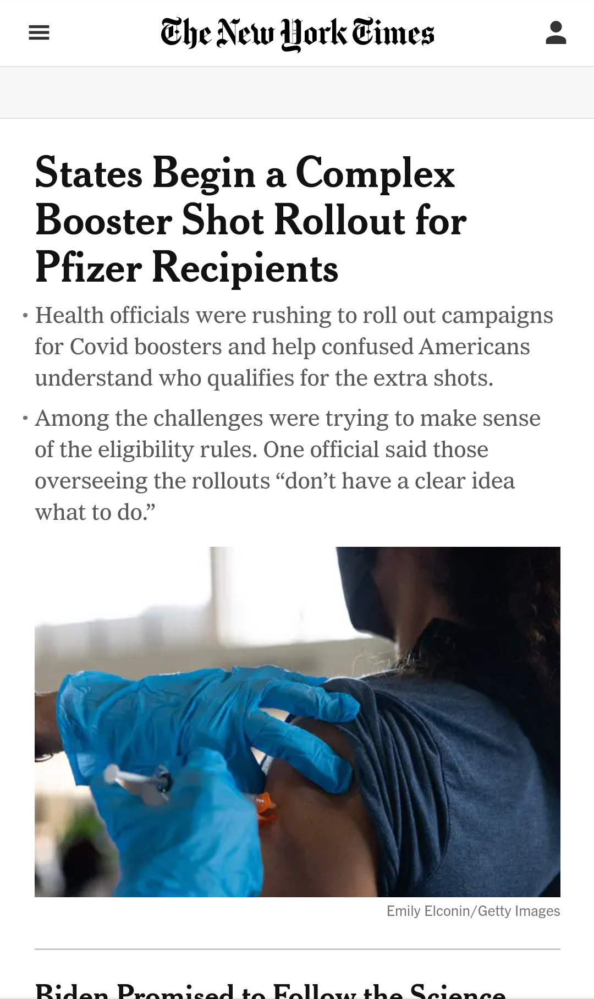

Visual Hierarchy
This New York Time website is showing the visual hierarchy principle. The vaccination image draw attention first, then the headline.Third, we have the two paragraph that are smaller and give informations about the image and the headline.
Hicks' Law
This PathwayConnect website demonstrates Hick's Law. There is only two buttons. The user is not faced with too many different options. It does not require too may time to the user to choose one of them.
Parc: Proximity

The Amazon website is using proximity. We have the header and the categories. They are placed in their own space. The images are equal to one another.